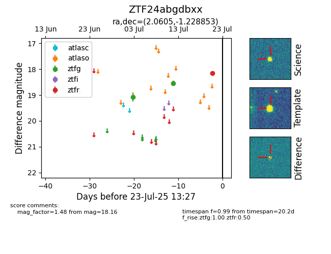

Target ZTF24abgdbxx at 2025-07-23 13:27, see:
FINK: fink-portal.org/ZTF24abgdbxx
Lasair: lasair-ztf.lsst.ac.uk/objects/ZTF24abgdbxx
ALeRCE: alerce.online/object/ZTF24abgdbxx
alt names
ZTF24abgdbxx (ztf,fink)
coordinates:
equatorial (ra, dec) = (2.0605,-1.22885)
galactic (l, b) = (99.3300,-62.10482)
photometry
last atlaso=nan, ztfg=18.55, ztfr=18.16
1 atlaso, 2 ztfg, 1 ztfr detections
